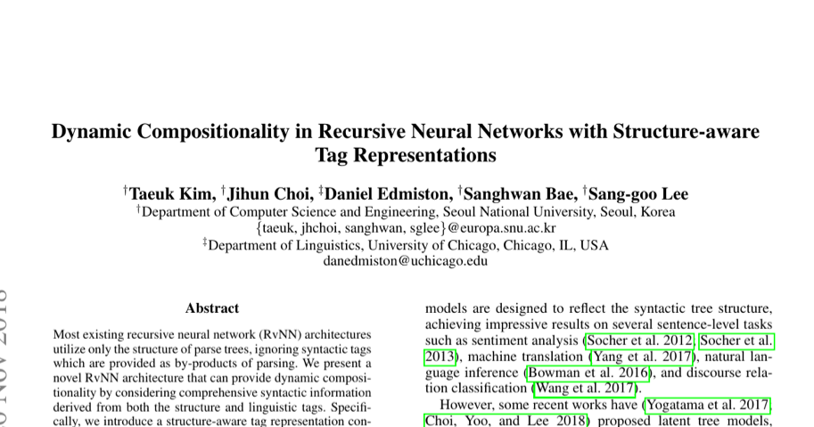

Dynamic Compositionality in Recursive Neural Networks with Structure-aware Tag Representations
AAAI 2019
Taeuk Kim, Jihun Choi, Daniel Edmiston, Sanghwan Bae, Sang-goo Lee
One-Line Summary
A recursive neural network architecture (SATA Tree-LSTM) that achieves dynamic compositionality by conditioning its composition function on structure-aware tag representations at each tree node, enabling syntactically adaptive sentence encoding that improves performance on sentiment analysis and natural language inference.

Figure 2. Architecture of the SATA (Structure-Aware Tag Augmented) Tree-LSTM, which augments word tree-LSTM with tag tree-LSTM for dynamic composition.
Background & Motivation
Recursive neural networks (RecNNs) build sentence representations by composing word vectors bottom-up along a syntactic parse tree. While this tree-structured computation is linguistically motivated, standard RecNNs apply the same composition function at every node — whether combining a determiner with a noun, an adjective with a noun phrase, or merging two independent clauses. Linguistically, however, these different syntactic constructions call for fundamentally different composition operations.
Core Problem: Standard Tree-LSTMs use a single, fixed set of weight matrices for all nodes in a parse tree. This means the model computes representations the same way regardless of whether it is composing:
NP + VP → S (subject-predicate merge)
DT + NN → NP (determiner-noun combination)
JJ + NN → NP (adjective-noun modification)
VP + PP → VP (verb phrase with prepositional attachment)
Each of these constructions involves different semantic relationships, yet the model applies the same transformation everywhere. This static compositionality limits the expressiveness of recursive models.
Prior attempts to address this limitation either relied on hand-crafted rules to select different composition matrices (e.g., MV-RNN) or required prohibitively large parameter spaces. The key insight of this work is that constituency parse tags — already available from the parse tree — provide a natural and compact signal for conditioning the composition function, enabling dynamic composition that adapts to each node's syntactic role without an explosion in parameters.
Proposed Method: SATA Tree-LSTM
The proposed model, SATA (Structure-Aware Tag Augmented) Tree-LSTM, introduces a parallel tag-level recursive network that runs alongside the standard word-level Tree-LSTM. The tag representations are used to dynamically modulate the composition function at each tree node.
1
Tag Embedding & Tag Tree-LSTM
Each node in the constituency parse tree is associated with its syntactic tag (e.g., NP, VP, S, PP). These tags are embedded into continuous vectors and processed by a separate Tag Tree-LSTM that computes structure-aware tag representations bottom-up. Unlike simple tag lookups, these representations capture the context of a tag within the tree — an NP under an S node is represented differently from an NP under a PP node.
2
Dynamic Weight Generation
At each internal node, the tag representations of the left child, right child, and parent are concatenated and fed through a lightweight parameter generation network. This network produces node-specific weight matrices and bias vectors that replace the fixed parameters in the standard Tree-LSTM gates (input gate, forget gates, output gate, and cell candidate). The generation network is implemented as a single linear transformation followed by reshaping, keeping the overhead minimal.
3
Syntactically-Conditioned Composition
The dynamically generated parameters are used to compose the child hidden states at the word level. Because different syntactic configurations (e.g., NP+VP vs. DT+NN) produce different tag representation triples, the model naturally applies different composition functions at different nodes. The resulting hidden state at the root of the tree serves as the sentence representation, now enriched with syntactic awareness at every composition step.
The architecture is general and can be applied to any binary-branching Tree-LSTM or Tree-GRU variant. It requires only the addition of tag embeddings and the parameter generation network, typically adding less than 15% to the total parameter count.
Experimental Results
The model is evaluated on two major NLP benchmarks: Stanford Sentiment Treebank (SST) for sentiment analysis and Stanford Natural Language Inference (SNLI) for natural language inference. Both tasks require high-quality sentence representations and benefit from compositional understanding.
Sentiment Analysis (SST)
Model
SST-5 (Fine-grained)
SST-2 (Binary)
Tree-LSTM (baseline)
51.0
88.0
Tree-LSTM + Tag Embedding
51.6
88.2
SATA Tree-LSTM (proposed)
52.6
89.2
Natural Language Inference (SNLI)
Model
Test Accuracy (%)
Tree-LSTM (300D, baseline)
85.9
SPINN
86.6
SATA Tree-LSTM (proposed)
87.2
Consistent improvements: SATA Tree-LSTM outperforms the standard Tree-LSTM baseline on both SST and SNLI, demonstrating that structure-aware dynamic composition produces higher-quality sentence embeddings across different tasks.
Tag embedding alone is insufficient: Simply concatenating tag embeddings with word embeddings (without dynamic weight generation) yields only marginal gains, confirming that the key contribution lies in dynamically modulating the composition function, not just adding tag features.
Robust to parse quality: Performance improvements hold when using both gold constituency trees and automatically generated parses from the Stanford Parser, indicating that the approach is robust to parse errors in practical settings.
Qualitative evidence of dynamic behavior: Visualization of the generated weight matrices reveals that the model learns distinct composition patterns for different syntactic configurations. For example, adjective-noun compositions produce markedly different weight patterns than subject-verb compositions, confirming that the model genuinely adapts its processing to syntactic structure.
Minimal parameter overhead: The tag Tree-LSTM and parameter generation network add relatively few parameters compared to the base model, making the approach efficient while delivering consistent gains.
Why It Matters
This work bridges an important gap between linguistic theory and neural network design by making recursive composition syntactically aware. Its contributions extend in several directions:
Principled dynamic composition: Unlike prior work that used hand-crafted rules or massive parameter matrices (e.g., MV-RNN's per-word matrices), SATA provides a principled and parameter-efficient mechanism for dynamic composition by leveraging the syntactic tags that are already available from the parse tree.
Linguistic grounding: The approach operationalizes the linguistic intuition that different syntactic constructions involve different semantic operations. The qualitative analysis confirms that the model discovers meaningful composition patterns aligned with linguistic categories.
General framework: The SATA mechanism is not tied to a specific RecNN variant or task. It can be applied to any tree-structured neural network, making it a general-purpose enhancement for syntax-aware NLP models.
Foundation for later work: The idea of conditioning neural network computation on structural metadata has influenced subsequent research on structure-aware transformers, grammar-aware language models, and syntactically-informed pre-training objectives.